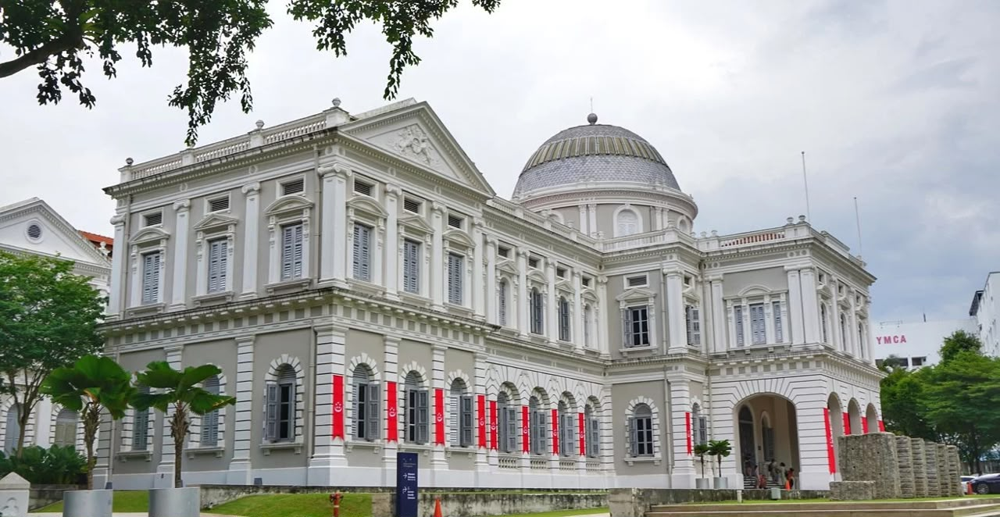

A1923
Pemindahan ke Raffles Museum pada Tahun 1923
Pada tahun 1923, Batu Bersurat Terengganu telah dipinjamkan ke Raffles Museum di Singapura atas faktor keselamatan. Tindakan ini dilakukan kerana pada ketika itu Terengganu masih belum mempunyai institusi muzium yang sesuai untuk menyimpan dan menjaga artifak bersejarah tersebut.
Pemindahan ini merupakan salah satu usaha awal untuk memastikan Batu Bersurat mendapat tempat penyimpanan yang lebih sesuai. Peristiwa tersebut turut menyedarkan pihak pemerintah tentang kepentingan mewujudkan sebuah institusi muzium bagi melindungi khazanah sejarah negeri.
